Tamil Nadu / vers Kumbakonam
5h00 réveil
9h00 départ de l’hôtel en tuk tuk pour le temple de Tanjore
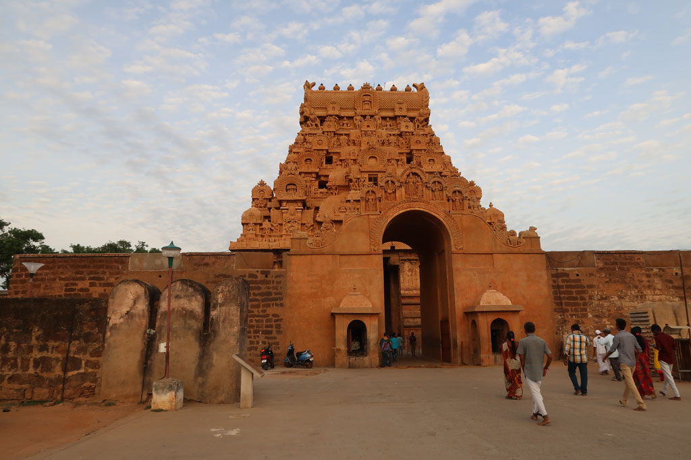

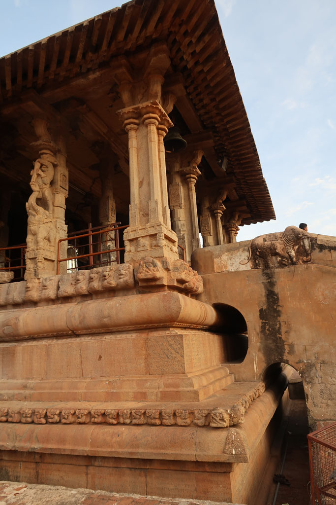
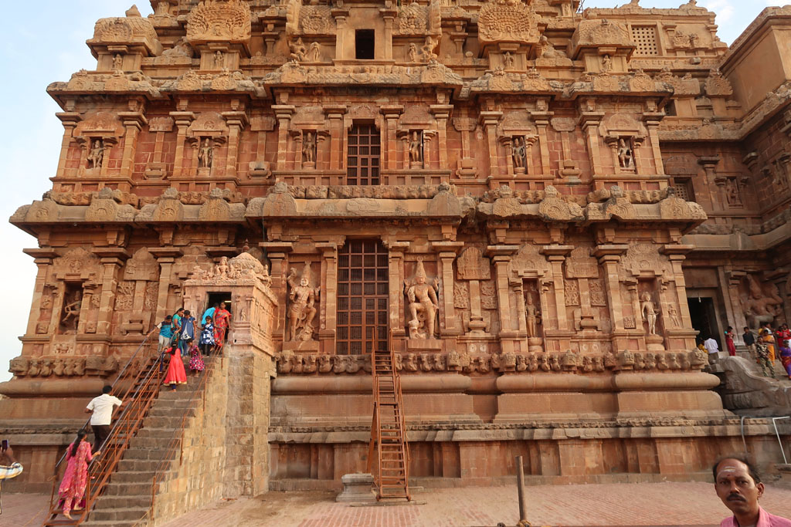
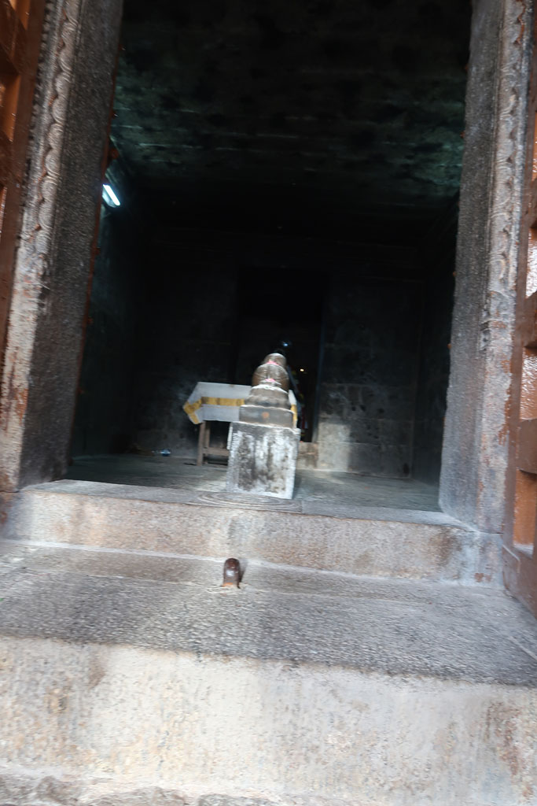
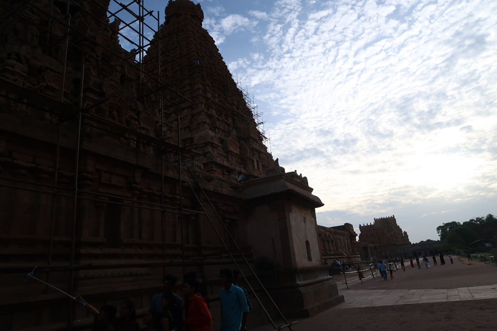
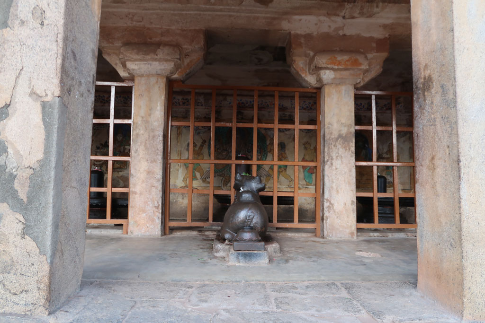
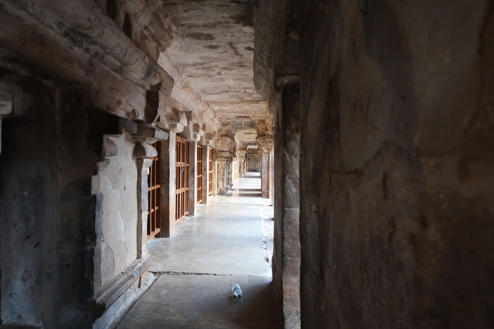
Superbe visite
7h30 fin de la visite, on se balade autour des remparts.
8h30 petit déjeuner indien x3
9h00 départ pour la gare routière en tuk tuk, à peine arrivés on saute dans le bus en partance.
10h30 en cours de route on s’arrête à Kumbakonam, tuk tuk pour rejoindre l’hôtel
11h40 on ressort faire le tour du quartier, on croise un marché, achat de bananes, on nous donne ensuite 2 fois plus que ce que l’on a acheté.
12h30 grosse chaleur, retour à l’ombre.
17h00 il est temps de ressortir, grande promenade dans les temples et rues de la ville. magnifique. Pause jus de fruits et cafés. Arrêt au bord du réservoir avec les habitants tandis que le soleil se couche.
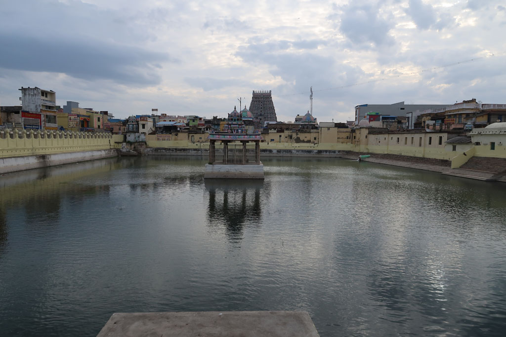
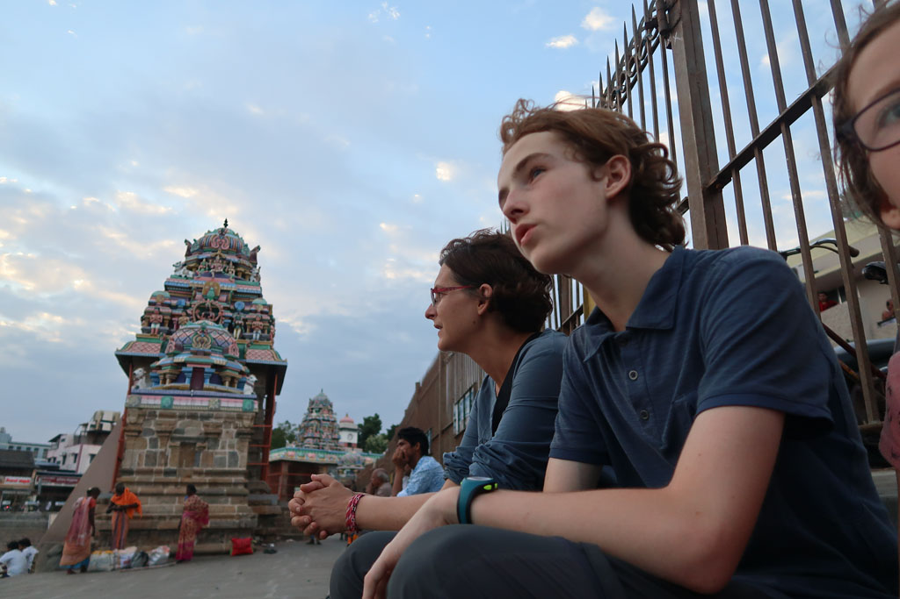
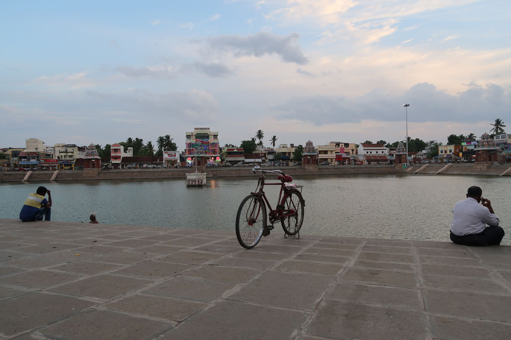
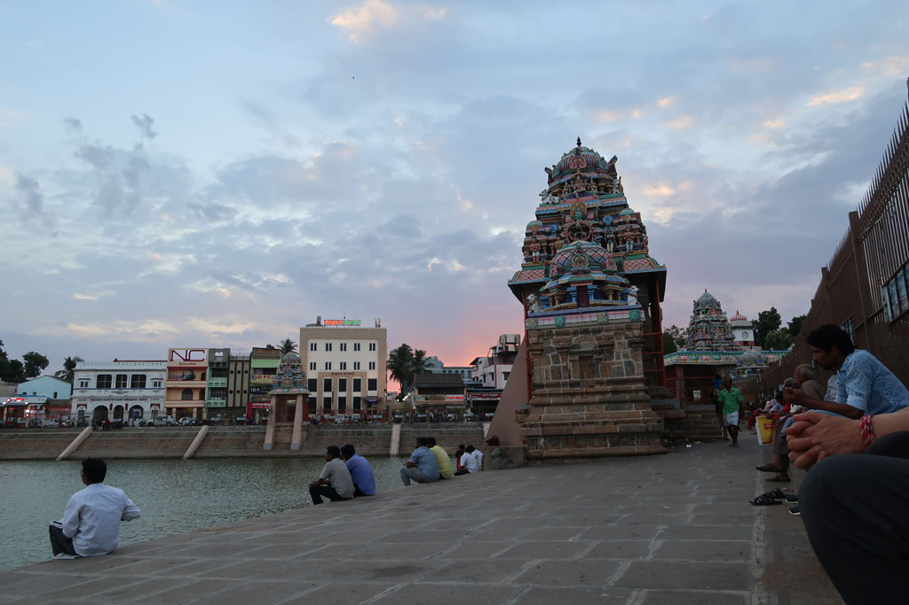
19h00 repas dans une cantine non loin de l’hôtel, chettinad mushroom dosa, onion uttapam, chapatis, veg uttapam, onion pakoda, lemon juice x4, café x3 490R